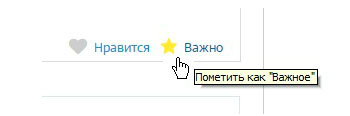

Важные сообщения - это сообщения, которые были помечены Вашими соседями как Важные. Для того чтобы пометить сообщение Важным, достаточно нажать на иконку в правом нижнем углу
Как только достаточное количество Ваших соседей пометят это сообщние Важным, остальные соседи будут немедленно оповещены по email. Для того чтобы отправилось

Однако будьте избирательны, и не помечайте Важными все сообщения подряд: система автоматически рассчитывает уровень довария пользователю, и может временно заблокировать возможность делать пометки важности.